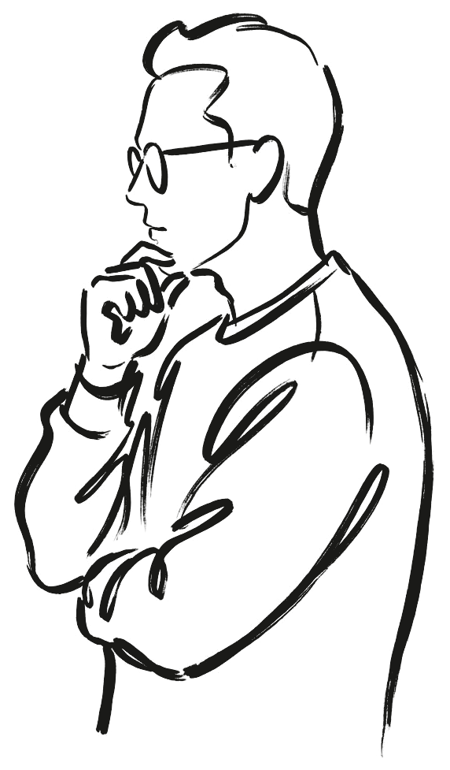
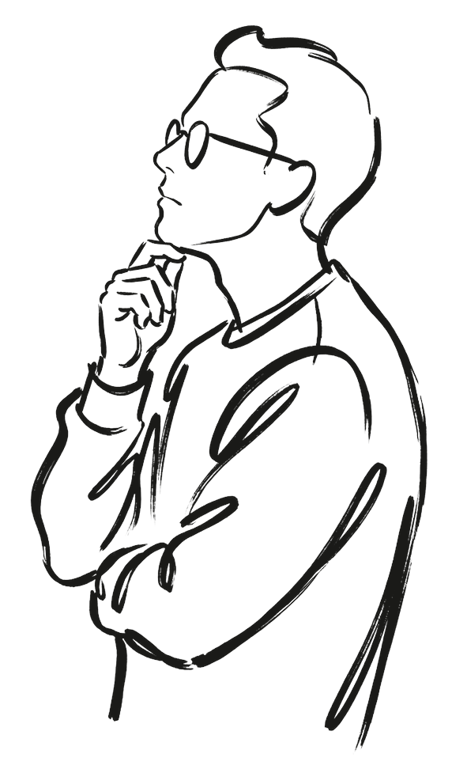
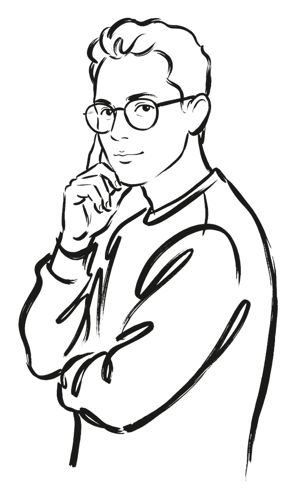
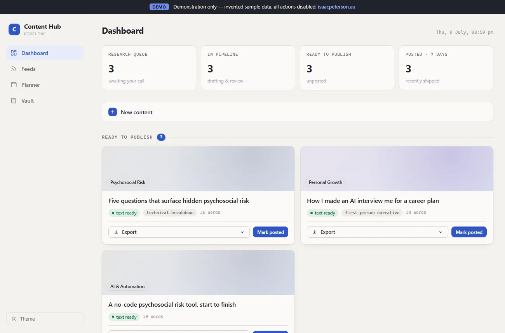
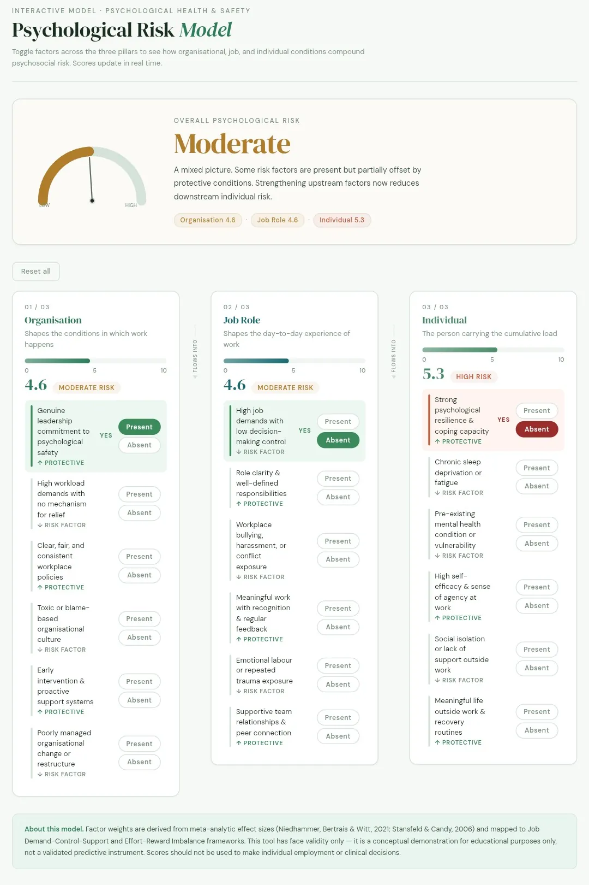
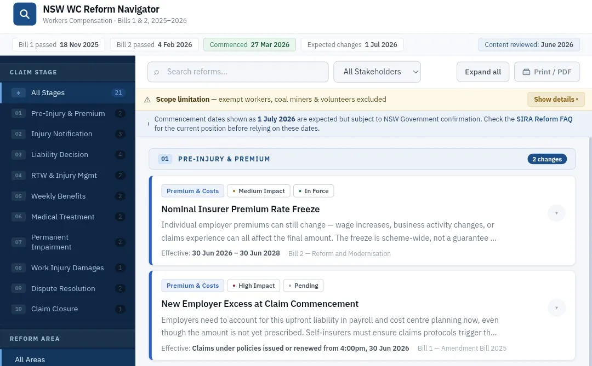
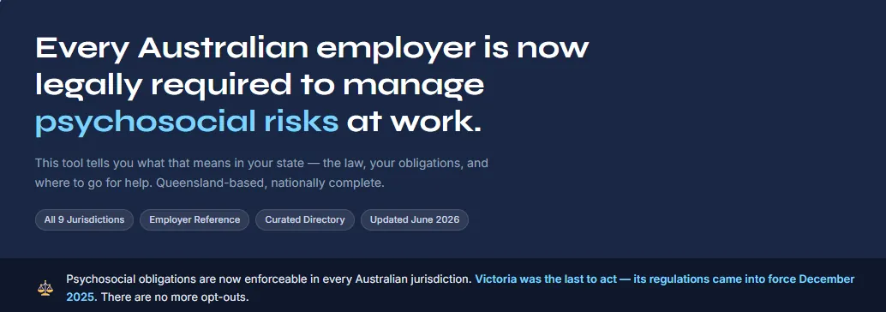
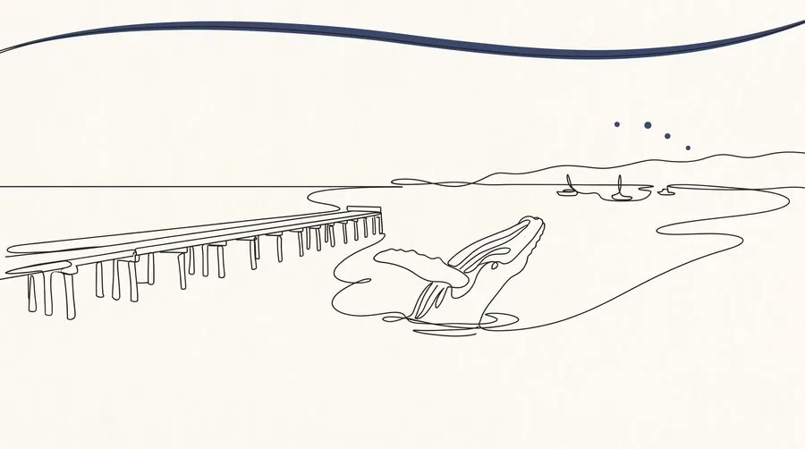
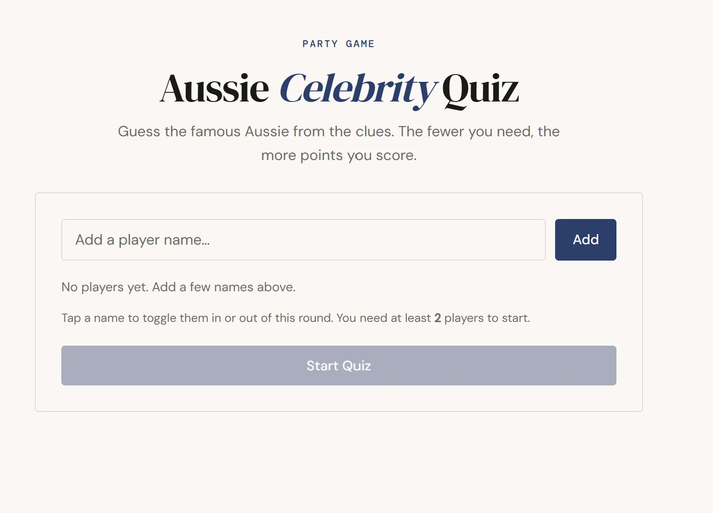
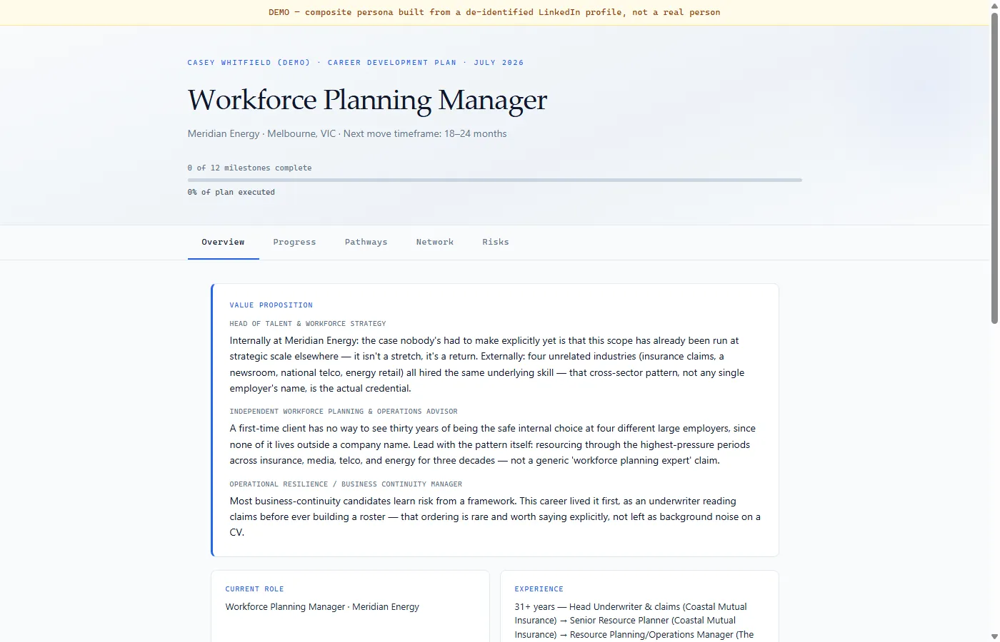

isaacpeterson.au
Fascinated by generative AI and the idea that one person can do it all.
This is where I figure things out in public.



PROJECTS
Things I've built and deployed. Tools, experiments, and projects, made with AI.

A demonstration of my AI content pipeline: research queue, drafting stages, planner, and knowledge vault. Sample data only, all actions disabled.

A conceptual model for mapping psychosocial risk across organisational, job, and individual dimensions.

An interactive guide to navigating the 2024 NSW workers compensation reforms.

A national reference directory across all nine Australian jurisdictions for managing psychosocial hazards.

An automated local newsletter — researched, written, illustrated and sent by AI. Whale-season events, local history, and a crossword for Hervey Bay, QLD.

A living-room quiz in a single web page. Guess the famous Aussie from six clues, with fewer clues worth more points and scores tracked for the whole room.

A real output of the Claude Interview skill: a fictional composite profile, interviewed, researched, and turned into an interactive plan — career pillars, a value proposition, and a full networking strategy.
ABOUT
Building with AI in Melbourne
I'm a New Zealander living in Melbourne, working in personal injury by day. I've always had ideas. What changed is that everything I need to build them is now within reach.
The world is moving faster than most people can keep up with. I'd rather get in front of it than catch up later.
I just have to ask the right questions and learn as I go.
LOCATION
Melbourne, Australia (originally NZ)
TECH & TOOLS
STATUS
Actively building in public
GET IN TOUCH
hello@isaacpeterson.au ↗